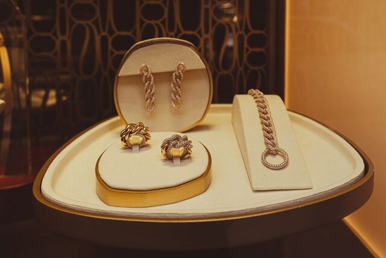
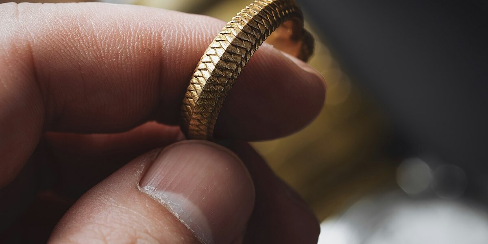
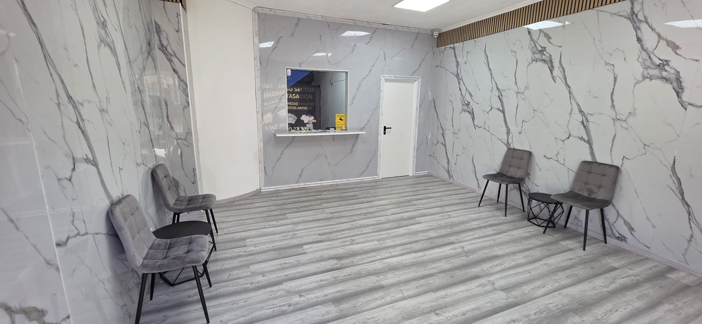

Tu oro, al precio justo
9k, 14k, 18k, 22k o 24k. Roto, sin pareja o en perfecto estado. Pesamos y comprobamos el quilataje delante de ti, sin compromiso.

9k, 14k, 18k, 22k o 24k. Roto, sin pareja o en perfecto estado. Pesamos y comprobamos el quilataje delante de ti, sin compromiso.

El valor del oro parte del peso y el quilataje, no de que la pieza esté entera. Te explicamos cómo llegamos al precio.

El quilataje marca cuánto oro puro tiene tu pieza, y por tanto lo que vale. Cuantos más quilates, más oro y más valor por gramo.
24k
Oro puro, 99,9%. Muy blando, casi no se usa en joyería de uso diario.
22k
91,6% oro. Habitual en joyería tradicional y piezas de países como India o Turquía.
18k
75% oro. El más común en joyería española, buen equilibrio entre valor y resistencia.
14k
58,5% oro. Más resistente al uso diario, algo menos de valor por gramo.
9k
37,5% oro. El quilataje más bajo habitual, poco frecuente en España.

En la báscula del mostrador, a la vista. Ves el peso real antes de que te digamos un precio.
Con la prueba en el mostrador, también delante de ti. Así sabes exactamente qué oro tienes.
Te explicamos el precio a partir del peso real de oro puro que contiene tu pieza y la cotización del día.
Pesamos la pieza y comprobamos el quilataje delante de ti. El precio sale del peso real de oro puro, según la cotización del día.
Sí. Aunque esté roto, sin pareja o incompleto, podemos valorarlo por el metal que contiene.
Cualquiera: 9k, 14k, 18k, 22k y 24k. Si no sabes el quilataje, lo comprobamos nosotros delante de ti.
Solo tu DNI. No hace falta factura de compra ni certificado de la pieza.
Sí. Valoramos el oro por su peso y quilataje, y si la piedra tiene valor te lo decimos aparte.
No. Puedes pasarte cuando quieras dentro del horario de tienda, sin avisar antes.
En efectivo o por transferencia bancaria, al momento, en cuanto aceptas el precio.
Unos minutos. Pesamos la pieza, comprobamos el quilataje y te damos el precio ahí mismo.
Dónde estamos
Blvr. de las Acacias, 6, Azuqueca de Henares. Lunes a viernes 10:15–14:00 y 17:30–20:15, sábados 10:15–13:30. Ver mapa y cómo llegar